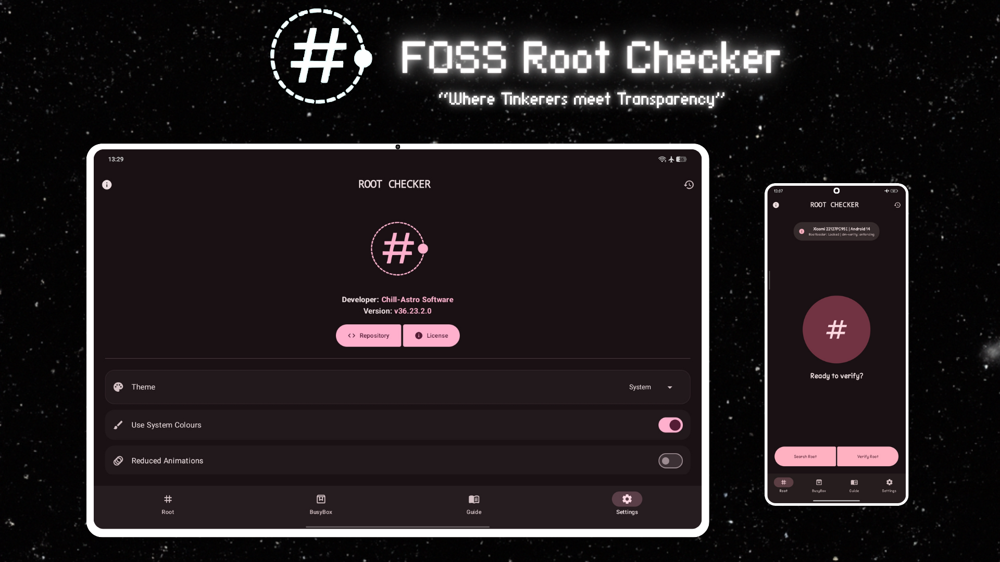
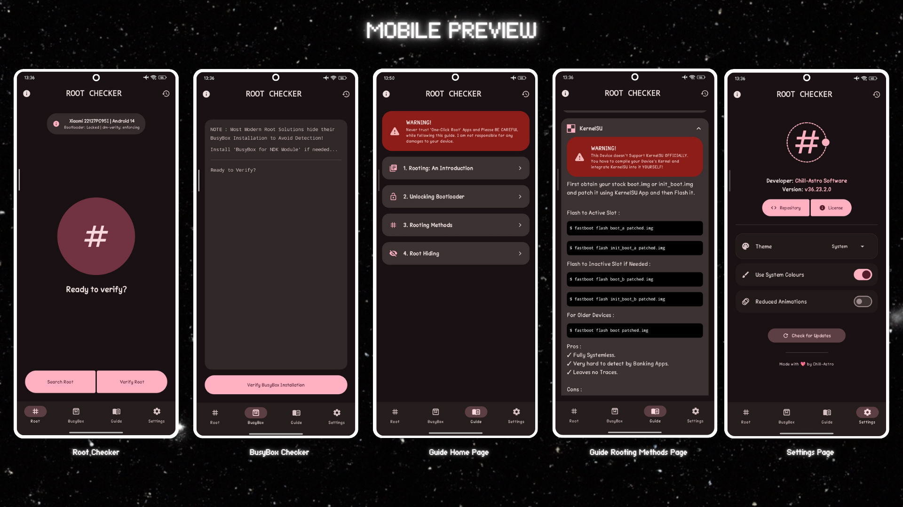
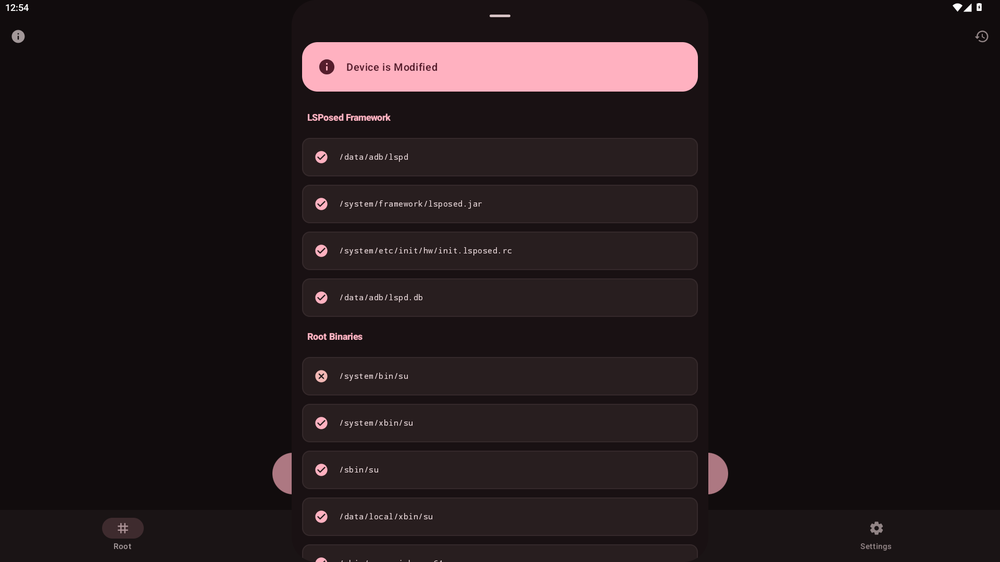

FOSS Root Checker as the name suggests is a Open Source Root Checker app for verifying Root Access on Android Mobile Devices from Android 6 +.
An Online Version of the App's Guide is given here .
How it works?
All checks are performed on a background thread
(Dispatchers.IO) to ensure your device
remains responsive during the scan.
-
If "Search Root" is pressed, she checks 40+ system paths to find traces of Root Access. If it finds them, Root Traces are found. If not, it is clearly shown.
-
Now if "Verify Root" is pressed, the App executes
su -c idand if it returns 0, Root Access is Verified. Else, Root Access is not Available. -
For BusyBox Checker, she checks BusyBox specific paths. If not found, the App executes
su -c which busyboxto verify BusyBox Installation.
Key Features:
- Ultra Low Footprint of 1.55MB ONLY! ✓
- Privacy First Design with full transparency. ✓
- Reduced Animations Enforced on Low end Devices (if RAM < 4 GB). ✓
- Modern Material UI with Monet Theming. ✓
- Support for Android 6+ Devices. ✓
- Works with Magisk, KernelSU, KSU Forks, APatch and older Methods. ✓
- Thorough Guidance provided on Rooting and Unlocking Bootloader. ✓
More Screenshots :

Showcase of Mobile UI

Info Panel